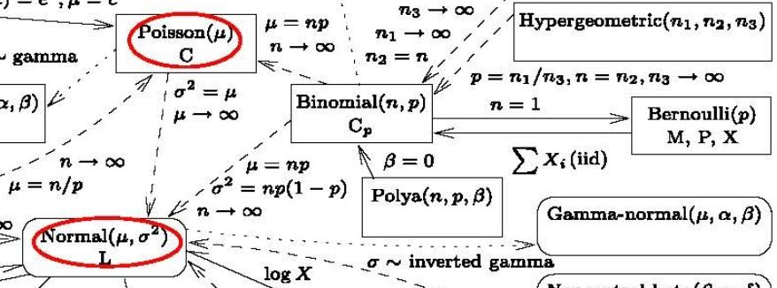

泊松分布¶
import numpy as np
import matplotlib.pyplot as plt
from numpy import power
from scipy.special import comb
1 相关知识¶
1.1 Bernoulli Experiment (伯努利试验)¶
对于一个试验（事件），如果重复发生的概率是独立的（互补影响），那么它是独立试验。特别的，如果这个试验只存在两种结果，则称其为伯努利试验。
1.2 Binomial Distribution (二项式分布)¶
对于重复\(n\)次的伯努利试验，我们可以计算成功\(k\)次的概率：
\(P_{k}=C_{n}^{k} p^{k}(1-p)^{n-k}=\frac{n !}{(n-k) ! k !} \cdot p^{k}(1-p)^{n-k}\)
def BinomialDist(n, k, p=.5):
return comb(n, k) * power(p, k) * power(1-p, n-k)
e.g. 假设我们抛一枚硬币，总共抛10次，求10次都是正面的概率？
解：\(P_{10} = 0.5^{10}\)
验证一下我们的函数：
BinomialDist(10, 10) == power(0.5, 10)
True
e.g. 假设我们抛一枚硬币，总共抛10次，分别求\(k=0,1,2,...,10\)次是正面的概率？
ks = np.linspace(0, 10, 11) #ks=0,1,2,...,10
Plst = BinomialDist(10, ks)
plt.plot(Plst, '.')
plt.title(r'$P(X=k),\ X \sim B(10,0.5)$')
plt.show()
从上图可以看出，\(k=5\)时候最大，这符合我们的预期：抛10次硬币，正面朝上的次数最有可能为5。即随机变量\(\xi \sim B(10, 0.5)\)，\(E(\xi)=np=5\)。
简单证明一下\(E(\xi)=np\)：
预备公式：\(k c_{n}^{k}=n c_{n-1}^{k-1}\)
离散型随机变量\(\xi\)的期望：\(E(\xi)=\sum_i^n(x_i\cdot p(x_i))\)
这里\(x_i = k = 0,1,...,n\)，而\(p(x_i)=p(k)=C_{n}^{k} p^{k}(1-p)^{n-k}\)
计算一下\(E(\xi)=\sum_i^n(x_i\cdot p(x_i))\)，ks相当于\(x_i\)，Plst相当于\(p(x_i)\)
print('mean =', (ks*Plst).sum())
print('mean =', 10*0.5)
mean = 5.0
mean = 5.0
其他证明方法和方差（\(D(\xi)=npq\)）可以参考二项分布的期望和方差的详细证明。
总结，如果随机变量\(X=k\)的概率满足\(P(X=k)=C_{n}^{k} p^{k}(1-p)^{n-k}\)二项式分布，则\(X \sim B(n,p)\)。
2 定义¶
二项式分布\(P\left(k\right)=\frac{n !}{(n-k) ! k !} \cdot p^{k}(1-p)^{n-k}\)要求\(n\)必须为已知数，但是生活中很多事情是没法统计出或者不存在精确的总数，这些事情往往是在一段连续的时间内出现一定的次数，相互之间没有影响（随机发生），并且单次事件耗时和概率几乎可以忽略（只有出现或者未出现，类似二项式分布；任意时刻发生的概率几乎为0）。例如，某个医院一天/一小时/一周内来的病人数量；某个包子店一天/一小时/一周内卖出的包子数量，我们能得到只有一段时间内事情发生的次数。
由于事情是随机发生的，也就是在统计的一定时间内，任意时刻都有可能发生，所以我们就要对二项式公式改进。假设一个小时内发生了\(m\)次，如果我们10分钟统计一次，总共统计\(n=6\)次，我们期待\(p=\frac{k}{n}\)，也就是\(k\)次需要分别散落在6个10分钟内，显然\(k\)次可能出现在一个10分钟内。那么1秒钟统计一次呢？还是不行，因为还是存在1秒钟发生\(k\)次的可能性。为了保证单位时间内最多只有一次事件发生，泊松分布将\(n \rightarrow +\infty\)，那么单次事件只能发生在\(\frac{1}{n}\)时间内。
我们可以统计出一段时间内出现的平均次数\(\lambda\)，那么可以认为单次事件概率\(p=\frac{\lambda}{n}\)，于是二项式分布就变成了：
其实\(e\)的定义就是（参见：自然常数e的含义）： \($\lim_{n \rightarrow +\infty}(1+\frac{1}{n})^n\)$
而\(e^{-\lambda} = \lim_{n \rightarrow +\infty}(1+\frac{-\lambda}{n})^n\)。
最终泊松分布定义为：若\(X\)服从参数为\(\lambda\)的泊松分布，记为\(X\sim \pi(\lambda)\)或\(X\sim P(\lambda)\)。
相关性质：
\(E(X) = \lambda\)
\(D(X) = \lambda\)
2.1 PMF与PDF¶
虽然\(n\rightarrow +\infty\)，并且公式也可以计算\(k>0\)的非整数，但是泊松分布还是针对离散型随机变量，所以上述公式又称为泊松分布的PMF（概率质量函数）。
PMF（Probability Mass Function，概率质量函数）: 是对离散随机变量的定义。是离散随机变量在各个特定取值的概率。该函数通俗来说，就是对于一个离散型概率事件来说，使用这个函数来求它的各个成功事件结果的概率。
PDF（Probability Density Function，概率密度函数 )：是对连续性随机变量的定义。与PMF不同的是，PDF在特定点上的值并不是该点的概率, 连续随机概率事件只能求一段区域内发生事件的概率, 通过对这段区间进行积分来求。通俗来说, 使用这个概率密度函数将想要求概率的区间的临界点（最大值和最小值）带入求积分，就是该区间的概率。
2.2 参数lambda¶
我们来看不同参数\(\lambda\)的泊松分布情况。注意，由于是离散随机变量，所以我们对\(k\)只能取\(\geq 0\)的整数。
from scipy.special import factorial
Xs = np.linspace(0, 50, 51)
def PD(k, lmd):
return np.power(lmd, k) * np.exp(-lmd) / factorial(k)
plt.figure(figsize=(10, 6))
plt.plot(Xs, PD(Xs, lmd=1), '*--', label=rf'$\lambda=1$')
plt.plot(Xs, PD(Xs, lmd=5), '^--', label=rf'$\lambda=5$')
plt.plot(Xs, PD(Xs, lmd=10), '.', label=rf'$\lambda=10$')
plt.plot(Xs, PD(Xs, lmd=15), '+', label=rf'$\lambda=15$')
plt.legend()
plt.show()
从上图中，可以看出，泊松分布围绕着\(\lambda\)为中心的，而且\(\lambda\)越大，越对称，也越像正态分布。
2.3 练习题¶
e.g.1 某餐厅早上15分钟内光临的顾客平均人数为10人，求早上15分钟内光临5人的概率？
解：由题可知\(\lambda=10,\ k=5\)，则\(P(X=5) = \frac{10^5}{5!}e^{-10}\)
PD(k=5, lmd=10)
0.03783327480207071
e.g.2 继续上题，求这段时间内3分钟内光临5人的概率？
解：由题可推测\(\lambda_3=3/15\times \lambda_{15}=2\)，则\(P_3(X=5)=\frac{2^5}{5!}e^{-2}\)
PD(k=5, lmd=2)
0.03608940886309672
3 与正态分布的关系¶
知乎上有个答案这样说的：
正态分布是所有分布趋于极限大样本的分布，属于连续分布。二项分布与泊松分布，则都是离散分布。二项分布的极限分布是泊松分布，泊松分布的极限分布是正态分布，即\(np=\lambda\)，当\(n\)很大时，可以近似相等。当\(n\)很大时（还没达到连续的程度），可以用泊松分布近似代替二项分布；当n再变大，几乎可以看成连续时，二项分布和泊松分布都可以用正态分布来代替！
乍一看，好像是这么回事，但是仔细想想我们本来就是假设\(n \rightarrow +\infty\)。从上面的实验中我们发现，\(\lambda\)越大越接近正态分布。
简书上一篇blog认为：当发生次数\(k\)比较大的时候，泊松分布会变成均值为\(\lambda\)，方差为\(\lambda\)的正态分布：
个人认为这个结论也是明显不对，因为不论参数\(\lambda\)，\(k\)都可以\(\rightarrow \infty\)。不过后半句话应该是对的。
根据这篇数学文章上的图（截取如下），当\(\mu\)也就是\(\lambda\rightarrow \infty\)和\(\sigma^{2}=\lambda\)时，变成了\(N(\mu, \sigma)\)：

这与我们的实验也是相符的。